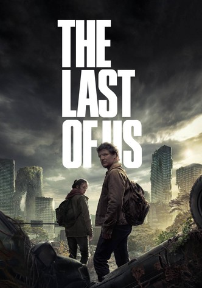
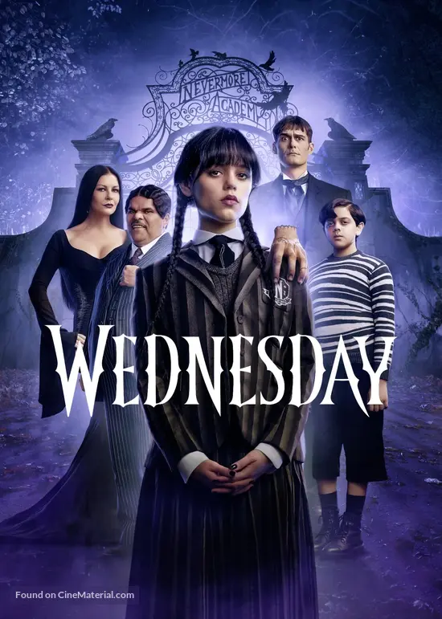
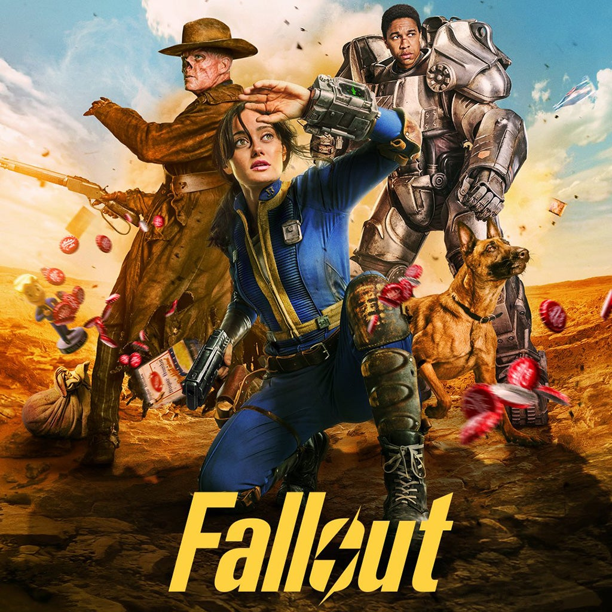
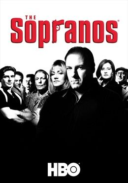

The product
A watchlist, a trust signal, and a way back in.
Three screens carry the whole loop: track a show, see what changed, add more without losing your place.
Dashboard: watchlist, recent updates, recommendations
Never miss a new season.
Track your favourite shows and we'll tell you the moment a new season is confirmed, dated, or ready to stream, and exactly where to watch it.

Season 5 confirmed, final season · Nov 26, 2026 · In 3 months
Checked 2h ago

On hiatus between seasons: no Season 4 date yet
Checked 5h ago

Season 3 confirmed · Jan 15, 2027
Checked 1d ago
Because you're watching Severance

The Last of Us

Wednesday

Fallout
Add a show: searches the loaded catalog and TMDB live
Fallout
Prime Video
Wednesday
Netflix

The Sopranos
HBO Max
Real dialog semantics, not a styled div: role="dialog", focus moves in on open and restores to the triggering button on close, and the page behind is marked inert while it's open, so a manual focus trap isn't needed, because inert content simply isn't reachable by Tab.
Sign in: passwordless, email magic-link
Never miss a new season.
Sign in with your email to track shows and get notified.